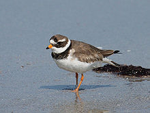
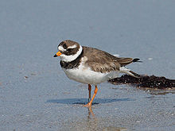

| Ringed Plover | |
|---|---|
|  | |
| Adult | |
| Conservation status | |
| Binomial name | |
| Charadrius hiaticula Linnaeus, 1758 |
| Ringed Plover | |
|---|---|
|  | |
| Adult | |
| Conservation status | |
| Binomial name | |
| Charadrius hiaticula Linnaeus, 1758 |
The Ringed Plover (Charadrius hiaticula) is a small plover.
Adults are 17-19.5 cm in length with a 35–41 cm wingspan. They have a grey-brown back and wings, a white belly, and a white breast with one black neckband. They have a brown cap, a white forehead, a black mask around the eyes and a short orange and black bill. The legs are orange and only the outer two toes are slightly webbed, unlike the slightly smaller but otherwise very similar Semipalmated Plover, which has all three toes slightly webbed, and also a marginally narrower breast band; it was in former times included in the present species. Juvenile Ringed Plovers are duller than the adults in colour, with an often incomplete grey-brown breast band, a dark bill and dull yellowish-grey legs.
This species differs from the smaller Little Ringed Plover in leg colour, the head pattern, and the lack of an obvious yellow eye-ring.
The Ringed Plover's breeding habitat is open ground on beaches or flats across northern Eurasia and in Arctic northeast Canada. Some birds breed inland, and in western Europe they nest as far south as northern France. They nest on the ground in an open area with little or no plant growth.
If a potential predator approaches the nest, the adult will walk away from the scrape, calling to attract the intruder and feigning a broken wing. Of course, once the intruder is far enough from the nest, the plover flies off.
Ringed Plovers are migratory and winter in coastal areas south to Africa. Many birds in Great Britain and northern France are resident throughout the year.
These birds forage for food on beaches, tidal flats and fields, usually by sight. They eat insects, crustaceans and worms.
There are three weakly-defined subspecies, which vary slightly in size and mantle colour; they intergrade where their ranges meet:
C. h. hiaticula and C. h. tundrae are among the taxa to which the Agreement on the Conservation of African-Eurasian Migratory Waterbirds (AEWA) applies.

{kind=link}
_(11).jpg){kind=link}
{kind=link}
{kind=link}
{kind=link}